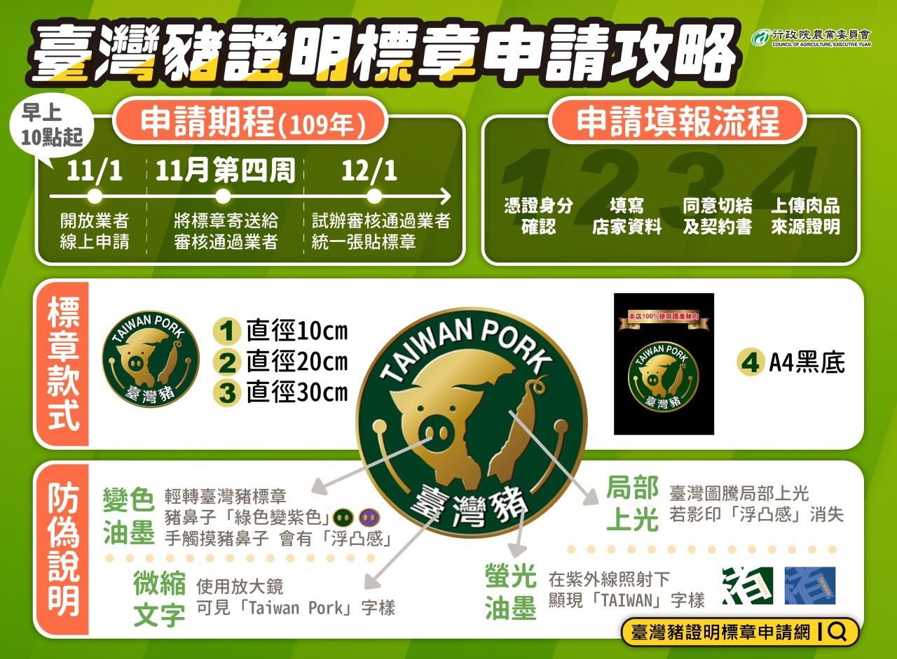

請點選地圖中的點
請點選地圖中的點
申請標章
網站問題反應
說明
注意事項：
為便利具商業登記或稅籍登記店家進行標章申請，已建置
臺灣豬證明標章申請網
提供線上辦理，只要使用工商憑證或自然人憑證身份確認、填寫店家資料、同意使用切結及契約書、上傳肉品來源證明資料等 4 個步驟即可完成申請程序，經中央畜產會審核通過後即會寄送標章，同時在該標章申請網將以地圖顯示店家位置及相關資訊，提供民眾查詢及就近消費。
另為便利店家張貼或擺放至營業場所明顯處供消費者識別，提供 4 種樣式供業者依需求選擇，共有外觀圓形直徑 10cm、20cm 及 30cm 等 3 種及外觀 A4 大小有「本店 100% 使用國產豬肉」文字樣式 1 種；針對外界關心標章偽冒疑慮，農委會則特別委由財政部印刷廠利用變色油墨、局部上光、微縮文字及螢光油墨方式進行 4 道防偽設計，分別為輕轉標章豬鼻子會由「綠色轉紫色」、臺灣圖騰「浮凸感」、臺灣豬中文字使用放大鏡可見「Taiwan Pork」字樣及紫外線照射顯現「Taiwan」字樣，提供分辨，中央畜產會亦會不定期派員對授權使用標章業者進行稽查，本府除配合相關作業外，亦將加強推廣國產優良豬肉，共同強化標章使用管理。

臺灣豬證明標章商家資料取自
行政院農業委員會資料開放平台
設定
回到目前位置
搜尋
名稱或代號